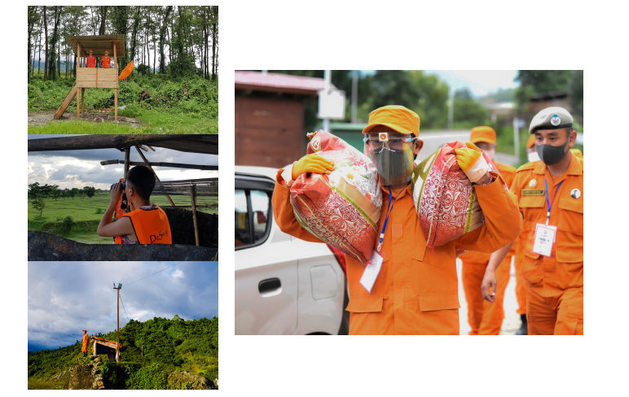

First syllable of the word “De“(bde) originates from the word “Dekyid” meaning peace or tranquility and “De” is commonly understood to be the shortened version of Dekyid.
Second syllable “Suung“(Srung) is commonly referred to the act of guarding or protecting.
Therefore the phrase – “De-Suung” means “Guardians of Peace“
